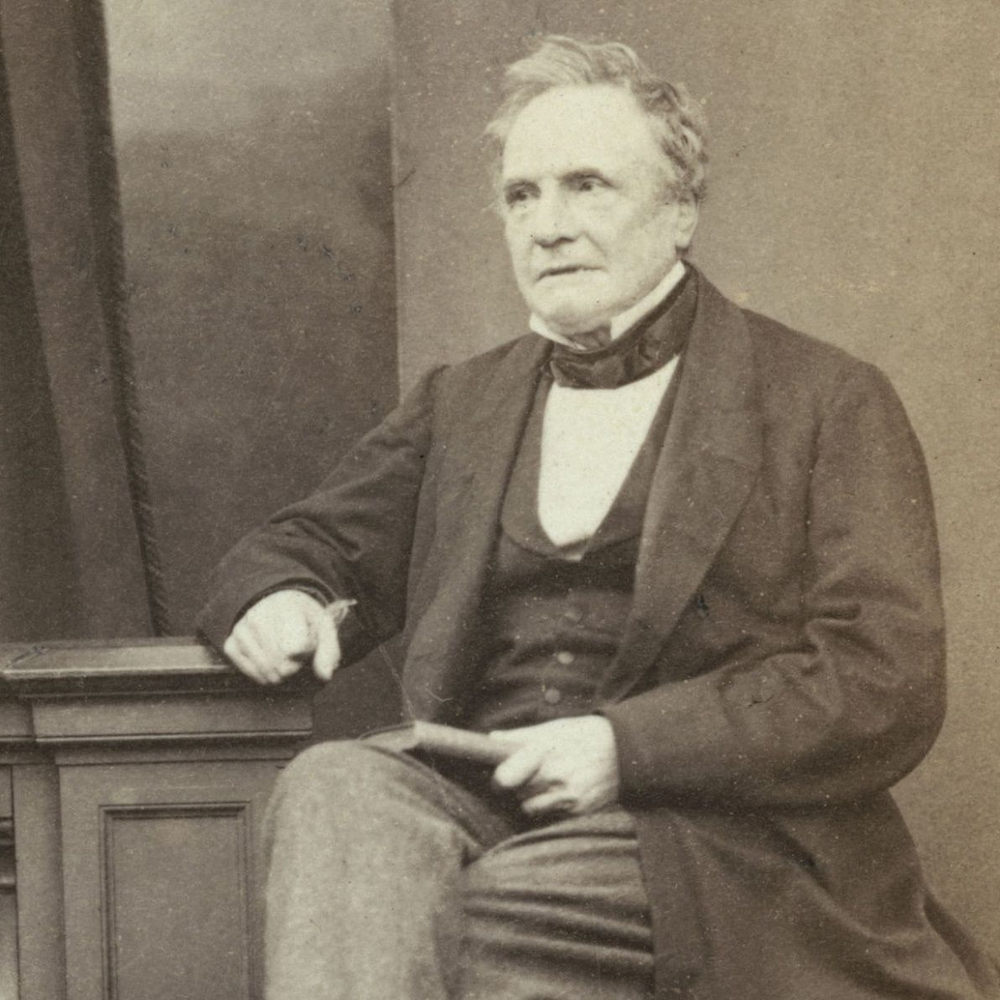
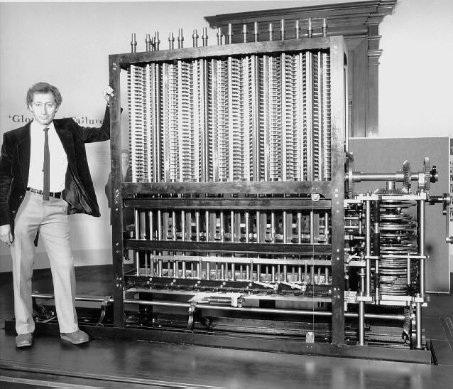

Ada Lovelace (1815-1852) foi uma matemática e escritora britânica, considerada a primeira programadora
de computadores da história. Ela é conhecida por ter escrito, em 1843, o primeiro algoritmo destinado a
ser processado por uma máquina, a Máquina Analítica projetada por Charles Babbage. Ada Lovelace também
previu o potencial dos computadores para ir além do cálculo matemático, imaginando que as máquinas
poderiam ser usadas para criar música e arte. Seu trabalho teve uma influência significativa na história
da computação e é um exemplo de como mulheres estiveram envolvidas na ciência e tecnologia desde os
primórdios dessas áreas, apesar das barreiras de gênero que enfrentaram.
Ela é lembrada como uma das pioneiras mais importantes da computação e uma inspiração para as
mulheres na tecnologia.
Lovelace teve uma educação incomum para uma garota aristocrática em meados do século XIX. Por insistência de
sua mãe, os tutores ensinaram matemática e ciências. Assuntos tão desafiadores não eram uma tarifa padrão
para as mulheres na época, mas sua mãe acreditava que se envolver em estudos rigorosos impediria Lovelace de
desenvolver o temperamento temperamental e imprevisível de seu pai.
Ada também foi forçada a ficar quieta por longos períodos de tempo, porque sua mãe acreditava que isso a
ajudaria a desenvolver o autocontrole. Desde o início, Lovelace mostrou talento para números e idioma. Ela
recebeu instruções de
William Frend, um reformador social; William King, o médico da família; e Mary Somerville, astrônoma e
matemática escocesa. Somerville foi uma das primeiras mulheres a ser admitida na Royal Astronomical Society
Por volta dos 17 anos, Ada conheceu Charles Babbage, matemático e inventor. A dupla se tornou amiga, e o
Babbage, muito mais velho, serviu como mentor de Lovelace. Através de Babbage, ela começou a
estudar matemática avançada com o professor da Universidade de Londres Augustus de Morgan. Conhecido
como o pai do computador, ele inventou o mecanismo de diferença, destinado a realizar cálculos
matemáticos. Lovelace teve a chance de olhar para
a máquina antes de terminar e ficou cativado por ela. A Babbage também criou planos para outro
dispositivo conhecido como mecanismo analítico, projetado para lidar com cálculos mais complexos.
Mais tarde, Lovelace foi convidado a traduzir um artigo sobre o mecanismo analítico de Babbage que havia
sido escrito pelo engenheiro italiano Luigi Federico Menabrea para um diário suíço.
Ela não apenas traduziu o texto original em francês para o inglês, mas também acrescentou seus próprios
pensamentos
e idéias na máquina. Suas anotações acabaram sendo três vezes mais longas que o artigo original. Seu
trabalho foi publicado em 1843, em um jornal de ciências inglês. Lovelace usou apenas as iniciais
"A.A.L." para Augusta Ada Lovelace, na publicação.

Charles Babbage em 1860

Charles Babbage com o primeiro computador do mundo
Parte da primeira máquina diferencial desenvolvida por C.B
IV. Vida pessoal
Em 1835, Lovelace casou-se com William King, que se tornou o conde de Lovelace três anos depois. Ela
então
recebeu o título de condessa de Lovelace. Eles compartilharam um amor por cavalos e tiveram três filhos
juntos. Na maioria das contas, ele apoiou os esforços acadêmicos de sua esposa. Lovelace e seu marido
socializaram com muitas das mentes interessantes da época, incluindo o cientista Michael Faraday e o
escritor Charles Dickens.
A saúde de Lovelace sofreu, no entanto, após um ataque de cólera em 1837. Ela tinha problemas
persistentes
com a asma e seu sistema digestivo. Os médicos lhe deram analgésicos, como láudano e ópio, e sua
personalidade começou a mudar. Ela teria experimentado mudanças de humor e alucinações. Lovelace faleceu
em 1852, aos 36 anos, de câncer uterino.